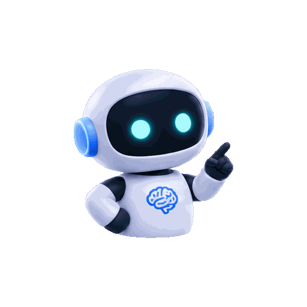
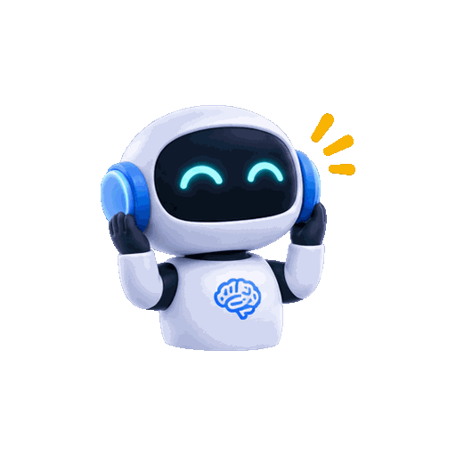
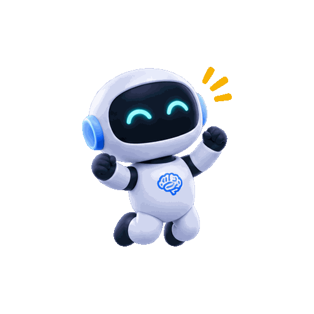
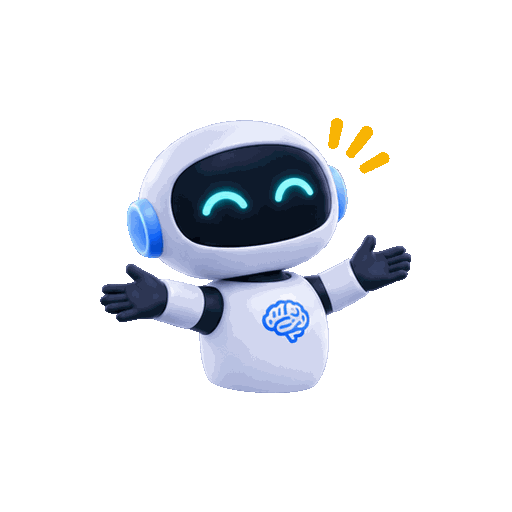
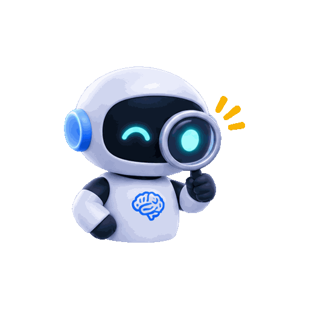
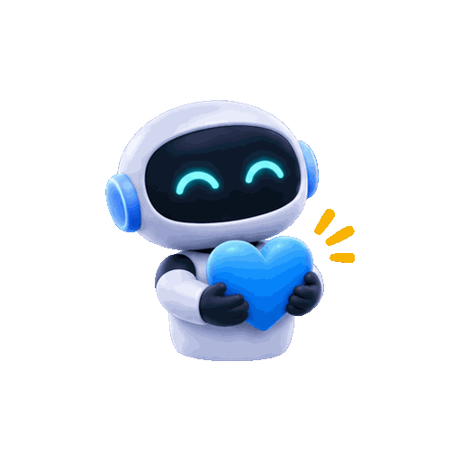
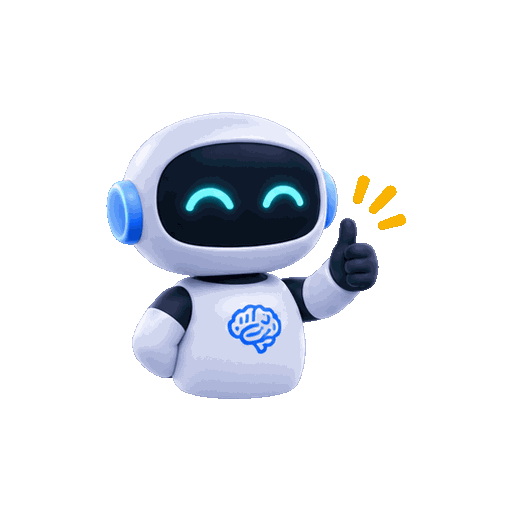

Clarifier les mots
Neurodiversité, neurotypique, neuroatypique, besoins, adaptations : apprendre à décrire sans réduire une personne à une étiquette.
La plateforme de contenus et l’agent IA dédiés à la neurodiversité.
Comprendre les fonctionnements neurocognitifs, explorer les comportements, consulter des ressources et trouver des pistes concrètes, pour soi et au travail.
VOTRE POINT DE DÉPART
Ces entrées sont facultatives et modifiables. Elles ne servent pas à déterminer votre profil.
UNE CONVERSATION SANS ÉTIQUETTE
Une question, un doute, une situation compliquée ? Bob vous aide à explorer des pistes, sans diagnostic ni jugement.
Entrée pour envoyer · Maj + Entrée pour un retour à la ligne
À VOTRE RYTHME
Des premiers repères pour ouvrir la discussion, poser une bonne question et imaginer des situations plus inclusives.
Ces fiches sont des contenus exploratoires pour la maquette, et non une base documentaire expertisée. Elles doivent être vérifiées avant un déploiement.
UNE PLATEFORME DE CONNAISSANCES
Des explications sur les fonctions neurocognitives, des décryptages de comportements et des cas professionnels. Les contenus sont consultables sans IA.
Bibliothèque de démonstration : sources externes réelles, textes éditoriaux à relire et à valider. Les mécanismes décrits ne constituent jamais un diagnostic individuel.
Ces publications constituent un prototype éditorial. Leur relecture scientifique, juridique et par les utilisateurs reste à organiser avant la production.
DES REPÈRES CONCRETS
Les outils, références et personnages du prototype. Les fiches de connaissance sont désormais accessibles dans la Bibliothèque.
Neurodiversité, neurotypique, neuroatypique, besoins, adaptations : apprendre à décrire sans réduire une personne à une étiquette.
Demander des consignes claires, expliciter un implicite, organiser une réunion ou traverser un malentendu.
La simplification, l'audio et le contraste sont des aides possibles. Ils ne remplacent pas les tests utilisateurs ou un audit d'accessibilité.
Consulter le référentiel RGAA ↗Documentation produit, choix encore ouverts, gardes-fous et tâches de développement sont détaillés dans le dépôt GitHub.
Lire le cadrage du projet ↗UNE MASCOTTE, PLUSIEURS EXPRESSIONS
Cliquez sur une illustration pour obtenir son PNG transparent.







L'IDÉE DERRIÈRE LE ROBOT
Neuro Bob+ est une maquette exploratoire née de réflexions collectives sur la neurodiversité et la vie au travail.
LA CONVICTION DE DÉPART
Les personnes neurotypiques peuvent découvrir les fonctionnements neuroatypiques. Les personnes neuroatypiques peuvent, tout autant, chercher à comprendre les comportements et conventions neurotypiques. Chacun peut poser une question sans se définir ni se justifier.
Aucun compte n'est requis. En démo, la conversation reste dans la mémoire de l'onglet et disparaît au rechargement. L'hébergeur peut toutefois traiter des données techniques. Avec Claude, les messages sont transmis au fournisseur après accord.
Bob n'est ni un médecin, ni un outil d'évaluation de collaborateurs. Il n'identifie pas des personnes comme « neuroatypiques » à partir de leurs comportements.
Le contenu, l'interface, les performances, les usages d'entreprise, l'accessibilité et la gouvernance des données doivent encore être testés et validés.